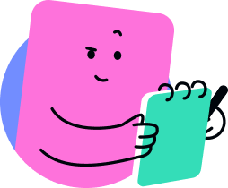

AI면접관 피드백

AI면접관이 각 답변에 대해서 피드백을 알려줘요!
총평
본 결과분석은 딥러닝으로 학습한 AI가 응시자의 답변내용 및 태도 등을 분석하여 해당 결과를 제시합니다.
AI가 평가한 점수를 바탕으로 전체 응시자 수준을 6등급으로 나누고 그에 속하는 구간에 결과를 제시합니다. 또한 해당 점수를 바탕으로 동일하게 적용하여 본
결과분석은 딥러닝으로 학습한 AI가 응시자의 답변내용 및 태도 등을 분석하여 해당 결과를 제시합니다. AI가 평가한 점수를 바탕으로 전체 응시자 수준을 6등급으로 나누고 그에 속하는 구간에 결과를 제시합니다.
개선점
6등급은 최우수/우수/양호/보통/미흡/평가미달 등급으로 나누어지며, 이러한 등급은 응시자간의 상대평가에 따른 것으로 실제 채용에서의 기준은 아니며
단순 참고용 자료로 활용해 주시기 바랍니다. 또한 이러한 등급의 분류는 응시자의 변동될 수 있는 점 참고부탁드립니다.
CheckList
지원자의 입력 내용 중에서 면접 시 필요한 질문을 AI가 정리한 내용입니다.
문항
질문
1
- 필리핀과 일본 부유식 해상풍력 프로젝트에서 고객사의 요구사항을 반영한 설계안을 제시했다고 하셨는데 이 과정에서 특히 중요한 과제는 무엇이었으며, 이를 해결하기 위해 어떤 노력과 협업을 진행하셨나요?
- 연구배 전단현상에 대한 데이터를 분석하고 보고하여 긍정적인 피드백을 받았다고 하셨는데, 이 발견이 프로젝트에 미친 구체적인 영향과 이를 식별하는 과정에서 겪었던 주요 도전은 무엇이었습니까?
2
- 프로젝트 진행 중 발생한 예상치 못한 문제 상황을 어떻게 해결하셨는지, 이 과정에서 가장 중요한 의사결정을 무엇입니까?
- 문제 해결 이후 동일한 이슈가 재발하지 않도록 어떤 예방적 조치를 마련하셨나요?
3
- 프로젝트 진행 중 발생한 예상치 못한 문제 상황을 어떻게 해결하셨는지, 이 과정에서 가장 중요한 의사결정을 무엇입니까?
- 문제 해결 이후 동일한 이슈가 재발하지 않도록 어떤 예방적 조치를 마련하셨나요?

설명
체크리스트는 AI가 입력된 자소서를 분석하여 질문이 필요한 부분을 정리하여 제시한 내용입니다. 면접 시 필요할 경우 활용할 수 있습니다.